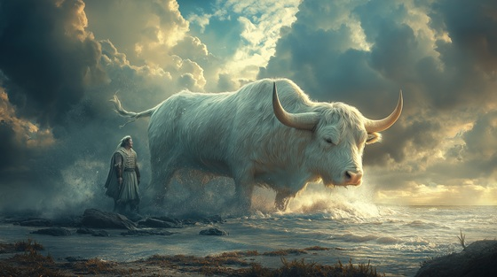

King Minos of Crete was sent a sacred white bull by Poseidon as a sign of divine favor, meant to be sacrificed in thanks.
But Minos, overcome by greed and pride, kept the bull for himself — an act of sacrilege that would unleash Poseidon's curse across his bloodline and kingdom.
The Broken Oath
The sea brought forth the sacred flame
A crown of white, a god’s own name
Yet gold and greed, the hunger fed—
I stole the sign the gods had bled
No altar burned, no prayer was cried—
I broke the oath, I dared the tide
Broken oath, cursed blood
The gods will drown me in the flood
No tower stands, no throne shall save—
The oath is carved into my grave
I wore the crown, I wore the lie
I watched the holy bull pass by
And in my pride, and in my lust—
I sowed the storm, betrayed the trust
No offering made, no gift returned—
The oceans roared, the heavens burned
Broken oath, cursed blood
The gods will drown me in the flood
No tower stands, no throne shall save—
The oath is carved into my grave
Now hear the cries, now hear the pain
The twisted curse upon my reign
The beast shall rise, the line shall fall—
And in my name, shall monsters call
The bull I spared, the gods defiled
The queen I loved, the curse beguiled
No stone, no chain can cleanse the stain—
The broken oath, the endless bane
Broken oath, cursed blood
The gods will drown me in the flood
The labyrinth calls, the heavens rave—
The oath is carved into my grave
Crown of lies, curse of kings—
The broken oath shall spread its wings